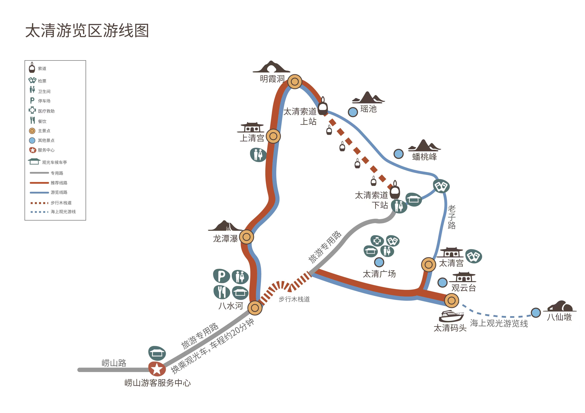
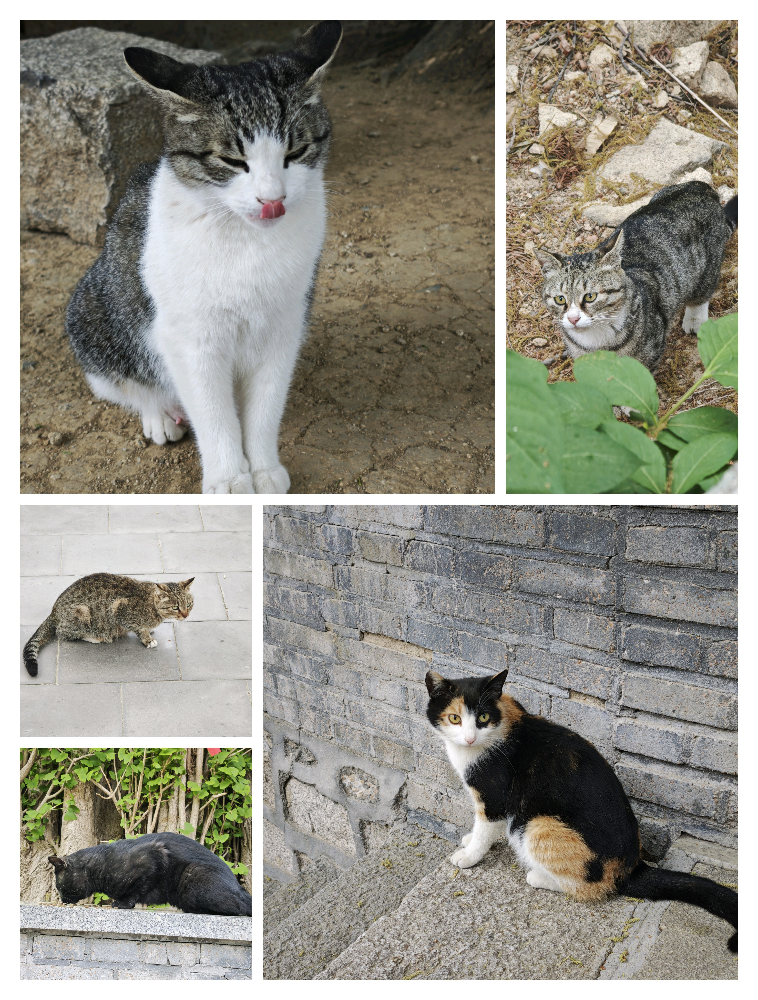

2026.5.2 - 崂山太清线 - 爬山记
前言
我又来写流水账了！
五一很快很快就来到了，由于并不想回家，所以打算出去转一转。
思来想去之后，决定叫上佬齐还有袁神一起去爬崂山。
由于很多线路佬齐和袁神都爬过了，所以我们选择去三个人都没去过的太清线。
Day -1
由于是第一次爬山，出发前一晚我准备了很多东西。
我带了充电宝，带了三个面包，带了两瓶水和两瓶能量饮料，还带了三个卤蛋以及两个火腿肠。
负重这一块！还没出发就给自己配重拉满了。
由于天气预报上说会下小雨，所以我里面穿了一个小短袖，外面套了一个外套，防止下雨降温受凉。
青岛的天气不同于我去过的其他城市，比如烟台啊，德州啊，济南啊，东营啊，真的是非常凉爽。一下雨还有点微微偏冷，在青岛呆久了都不想去山东的其他城市生活了。
说回正题，由于第二天要下雨，所以我们决定早点出发，七点就出发！！！早起对于我这种作息不规律的人来说就相当于自杀，所以我决定早点上床睡觉，但是很可惜我失眠了，从十一点半上床开始辗转反侧，直到三点半才睡着。
Day 0
早上七点闹钟把我从美梦中唤醒，由于睡眠量只有惊人的3.5h，我感觉身体被掏空。
在简单的进行洗漱过后，我和佬齐在食堂集合，简单的吃了一些早饭（吃了一根巨大油条，一根烤肠，一碗牛奶燕麦粥），然后就出发了。
我们从一号线上的石油大学出发，一路坐到海泊桥，在这里与袁神集合。然后转四号线，一路坐到最后一站大河东站下车。
到了崂山游客服务中心，我们检了票，然后乘大巴一路坐到太清线的起点八水河。好久没坐大巴了，意外的有点晕车。

由于是第一次爬山，所以斗志还是比较足的！！我们从八水河出发，沿着八水河 - 龙潭瀑 - 上清宫 - 明霞洞 - 瑶池 - 蟠桃峰 - 老子路 - 太清宫 - 观云台 - 八水河的线路进发，由于索道进入了维修期，所以我们下了必胜的决心走完全程！！
第一个到达的景点是龙潭瀑，我以为会是一个巨大的瀑布，有飞流直下三千尺的壮美，但实际上水量小的可怜，不过涓涓细流也挺美的。


过了龙潭瀑，我感觉上的有点急，已经汗流浃背了。所以叫佬齐和袁神一起休息。我打开背包拿出吃的和喝的就开始往肚子里胡吃海塞，休息了一会我们继续出发。
第二个景点是上清宫，上清宫离龙潭瀑还是比较远的，而且平路少，上坡路多，给我累够呛。我们走走歇歇，最终还是走到了上清宫。上清宫是道教华山派的庙，我们简单转了转，休息了一下就继续出发。


继续往明霞洞走，依旧是上坡路。可能是刚刚进肚的面包啊，火腿啊，能量饮料发力了，我感觉到全身能量充沛，一路爬石梯到了明霞洞。
这里已经算是整条路线的最高点，我们在这里一起拍了照。


过了明霞洞，剩下的路基本都是下坡路，但是也没有想象的那么好走。从明霞洞到太清宫的这一段下坡路非常的陡，在上面走有一种要飞出去停不下来的感觉，所以这一段我们走的比较慢。
到了太清宫之后，我们买了票进去转了转。太清线研究生可以买学生票，但是太清宫门票研究生只能买成人票，很奇怪。
太清宫里面有道家的各种神仙。我们在前往太清宫的路上，遇到了一个很有趣的讲解员，应该是旅游团的讲解员，要收费的那种。但是我们故意慢慢走跟在那个讲解员的后面，听到了很多的知识。她虽然讲解了很多知识，但我基本上都左耳朵进右耳朵出，跑掉了。唯一记住的神仙就只有西王母，因为男生拜西王母可以求姻缘（坏笑），我还顺便想麻烦西王母给我的论文以及奖学金保佑一下。
在从太清宫出来之后，我们坐车一路回到了游客服务中心。
总的来说崂山太清线景色还是非常美的，难度也是中规中矩，大概四五个小时就能游览完全程，即使是我这种腿脚不灵便的笨笨研究生也可以爬下来。如果平时比较闲，非常推荐来玩。
我们三个爬完崂山之后，基本上都力竭了。在找了一家火锅自助之后，三个人开始进行一个标准的胡吃海塞，反正评价就是吃美了。
番外
太清线路上有非常多的可爱猫猫，下面是猫猫照片。
